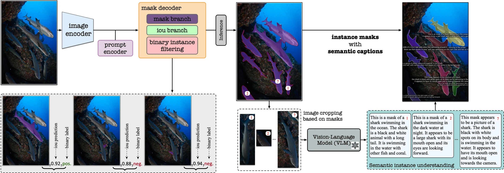

ECCV 2024 · Oral
MarineInst
A Foundation Model for Marine Image Analysis with Instance Visual Description
A marine foundation model that describes each object it finds. It first segments every instance, then writes a semantic caption for each mask; binary instance filtering removes non-instance masks in training and inference. One model serves tasks from image-level scene understanding to instance-level analysis.
Project page ↗Paper ↗Code ↗